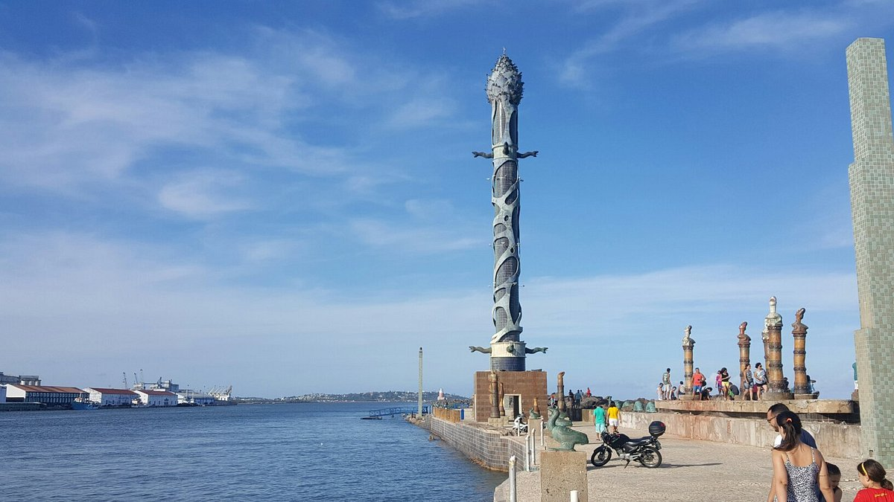
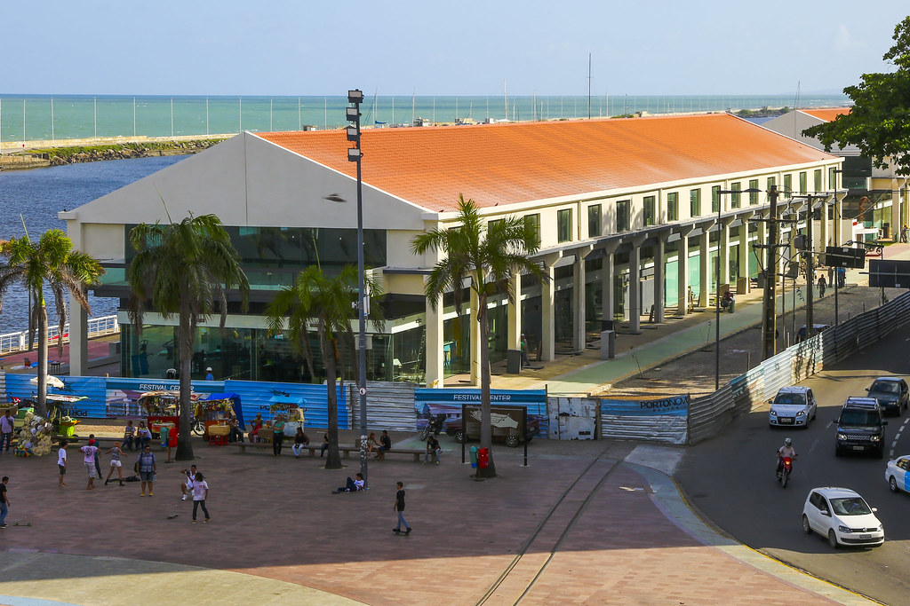

Marco Zero - Recife
A Praça Rio Branco, também conhecida como Marco Zero, é um espaço público localizado no bairro do Recife da cidade homônima, capital de Pernambuco.
O local fica próximo ao Porto do Recife e abriga o Marco Zero da cidade do Recife.
É deste marco que são feitas todas as medidas oficiais de distâncias rodoviárias locais. O lugar acontece vários eventos,
um dos mais conhecidos é o carnaval multicultural do Recife, evento que arrasta uma grande multidão de todos lugares do mundo.

O que fazer no Marco Zero?
O Marco Zero é um dos lugares preferidos dos turistas e recifenses. É o lugar onde acontece tudo, desde a shows ou encontros de pessoas para apreciar a vista
ou andar de bicicleta. É um lugar bem agradável para passar o dia com os amigos.
1. Conhecer o conjunto arquitetônico eclético
A praça e o bairro inteiro, já durante o domínio holandês (1630-1654), passaram por aterros e reformas radicais, com altos e baixos. Uma das mais importantes
foi a reforma urbana do início de 1900, que deixou como legado um importante acervo arquitetônico eclético, tombado como patrimônio nacional pelo IPHAN em 1998, que assim
justifica o reconhecimento:
Os edifícios de inspiração eclética, construídos entre 1912 e 1915, que merecem destaque pelo valor histórico e arquitetônico são:
- Antiga sede do London & River Plate Bank:localizado entre as avenidas Alfredo Lisboa, Marquês de Olinda e Rio Branco, é um dos palacetes mais bonitos da cidade
(o primeiro da esquerda para a direita). Passou muito tempo fechado mas hoje sedia a empresa informática In Loco que disponibiliza visitas guiadas (informações no local porque o site não está atualizado).
- Associação Comercial de Pernambuco: sede da associação; abriga importante acervo da memória do comércio pernambucano, como quadros, vitrais e uma coleção de livros e jornais (o segundo da esquerda para a direita).
O edifício pode ser visitado mas consulte o site oficial para maiores informações.
- Prédio da Caixa Cultural:inicialmente projetado como sede do Bank of London & South America Limited, em 1967 foi adquirido pela Bolsa de Valores de Pernambuco (terceiro edifício na foto de abertura).
Hoje sedia a Caixa Cultural e organiza exposições. Consulte o site oficial para conferir a programação.

2. Visitar o Parque das Esculturas de Francisco Brennand
Exatamente na frente do Marco Zero, do outro lado do estuário, fica o Parque das Esculturas, uma exposição de mais de 90 (?) obras do escultor e artista plástico pernambucano Francisco Brennand, inaugurado em 2000 para comemorar
os 500 anos da chegada dos portugueses ao Brasil. A obra mais famosa é a Torre de Cristal, com 32 metros de altura. Infelizmente fica difícil informar sobre as outras obras porque há anos o parque é alvo de roubos (sim, roubos)
e atos de vandalismo. Algumas das obras mais interessantes foram estragadas ou roubadas, como a imensa Serpente de bronze de quase 20 metros de comprimento.
O parque é pouco fiscalizado e à noite é mal iluminado e pouco visível.
Uma pena que o descaso do Poder Pública tenha mais uma vez subestimado o valor cultural e histórico dos monumentos da cidade.
Para chegar lá você pode pegar o barquinho que sai do Marco Zero ou ir de carro, moto ou bicicleta passando pela
Avenida Brasília Teimosa, seguindo até o dique. Aconselho a quem vai de carro de verificar as condições do trecho da avenida que fica no dique. No local tem um pequeno estacionamento.

3. Armazém do Porto
Do lado direito da praça encontra-se Armazéns do Porto, um espaço de entretenimento e gastronomia, com várias opções de bares e uma vista excelente onde recifenses e turistas jogam papo fora nos fins de tarde e à noite.
Recife tem muitas coisas legais para conhecer, não deixem de visitar essa cidade maravilhosa.
